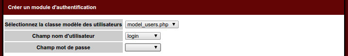
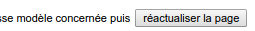

Episode 5: Builder: module d'authentification
I. Introduction
Dans cet épisode nous allons voir comment ajouter un module d'authentification à votre application.II. Créons l'application
Dans le builder, créer l'application "application"III. Connectons-la à notre base de données
Nous avons ici une base mysql "tutorialDb" contenant entre autre une table "users"Editez le fichier de configuration conf/connexion.ini.php
;<?php die()?>
[db]
tutorial.dsn="mysql:dbname=tutorialDb;host=localhost"
tutorial.sgbd=pdo_mysql
tutorial.username=root
tutorial.password=root
IV. Créons la couche modèle
Cliquez ensuite sur "créer la couche modèle"Sélectionnez ensuite le profil "tutorial"
Nous cochons uniquement la table "users" qui nous permettra de stoquer nos utilisateurs
Puis générer.
Le builder vous génère votre classe model/model_users.php
V. Générons le module d'authentification
Actuellement si nous cliquons sur "voir le site", on arrive sur une page simple:On peut lire dans la barre de debug, que nous chargeons par défaut le module "default" et l'action "index"
Cliquez sur "Créer un module d'authentification avec inscription"
Le builder vous liste les classes modèle disponible, sélectionnez "model_users.php"
Puis sélectionnez le champ pour le nom d'utilisateur: "login" et "password" pour le mot de passe.

En sélectionnant le nom d'utilisateur et le mot de passe, le formulaire change
Le builder vous demande d'ajouter deux méthodes dans votre classe model model/model_users.php
Ajoutez les deux méthodes générés par le builder (celles-ci peuvent différer en fonction des noms de vos champs en base de données ):
public function getListAccount(){
$tAccount=$this->findAll();
$tLoginPassAccount=array();
if($tAccount){
foreach($tAccount as $oAccount){
//on cree ici un tableau indexe par nom d'utilisateur et mot de pase
$tLoginPassAccount[$oAccount->login][$oAccount->password]=$oAccount;
}
}
return $tLoginPassAccount;
}
public function hashPassword($sPassword){
//utiliser ici la methode de votre choix pour hasher votre mot de passe
return sha1('2votreSelAchanger2'.$sPassword);
}
La seconde, elle, permet de retourne l'empreinte du mot de passe. En effet, pour des raisons de sécurité, on ne stoque pas les mots de passe en clair mais un hash de celle-ci. Lorsque l'utilisateur nous soumet son mot de passe, on fait appel à la même méthode pour générer l'empreinte, puis on vérifie avec l'empreinte stoquée en base de données.
Note: pensez à changer le sel de la méthode hashPassword() pour qu'il soit unique à votre application
Vous avez ici deux façons d'ajouter ces deux méthodes:
1. en cliquant sur le lien présent sur le builder (qui passera par l'explorateur)
2. en éditant le fichier via votre éditeur de code habituel
Ajoutez ces deux méthodes dans votre classe model_users (fichier model/model_users.php)
Puis cliquez sur le bouton de réactualisation:

Le formulaire change à nouveau:
Vous voyez ici que l'on vous demande le nom du module d'authentification à générer
On nous demande également de séléctionner le couple de module/action où rediriger une fois connectée
Validez ensuite ce formulaire:
Le builder vous génère un module "auth"
On nous demande également de modifier une variable dans le fichier de configuration.
Soit vous cliquez sur le lien présent dans le builder, soit vous éditez vous-même le fichier conf/site.ini.php
VI. Visualisons l'application
Si on clique à nouveau sur "voir le site"On n'arrive plus directement sur notre module "default", mais sur un formulaire de login.
Cliquez sur le lien inscription:
Rensigner un compte: par exemple login/pass
Authentifiez-vous avec:
On arrive ici de nouveau sur notre page "defaut"
VII. Ajouter un bouton se déconnecter
Si vous editer le fichier module/auth/main.php vous verrez qu'il y a notamment une méthode _logout() qui permet donc de se déconnecter.Editons la vue index du module "default" pour ajouter un lien de déconnexion
Editez module/default/view/index.php pour ajouter un lien de déconnexion:
vue index
<br/>
<a href="<?php echo _root::getLink('auth::logout')?>">Se deconnecter</a>